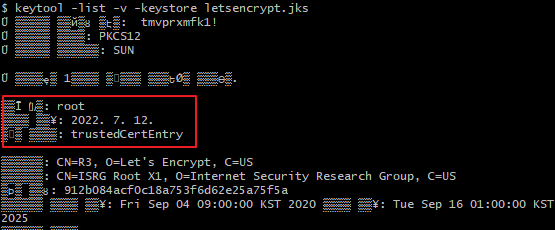
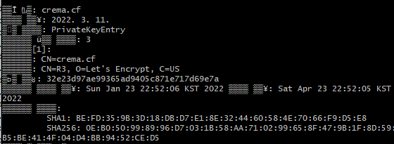

Alias name [root] does not identify a key entry
2022, Jul 12
ssl springboot
problem
이제까지 server.ssl에 alias를 설정한 적이 없는데
갑자기 alias가 null이라고 하더니
alias를 지정하면
alias가 맞지않다고 나온다.
error
Caused by: java.lang.IllegalArgumentException: Alias name [root] does not identify a key entry
at org.apache.tomcat.util.net.AbstractJsseEndpoint.createSSLContext(AbstractJsseEndpoint.java:99)
at org.apache.tomcat.util.net.AbstractJsseEndpoint.initialiseSsl(AbstractJsseEndpoint.java:71)
at org.apache.tomcat.util.net.NioEndpoint.bind(NioEndpoint.java:258)
at org.apache.tomcat.util.net.AbstractEndpoint.bindWithCleanup(AbstractEndpoint.java:1204)
at org.apache.tomcat.util.net.AbstractEndpoint.start(AbstractEndpoint.java:1290)
at org.apache.coyote.AbstractProtocol.start(AbstractProtocol.java:614)
at org.apache.catalina.connector.Connector.startInternal(Connector.java:1072)
... 20 common frames omitted
Caused by: java.io.IOException: Alias name [root] does not identify a key entry
at org.apache.tomcat.util.net.SSLUtilBase.getKeyManagers(SSLUtilBase.java:336)
at org.apache.tomcat.util.net.SSLUtilBase.createSSLContext(SSLUtilBase.java:246)
at org.apache.tomcat.util.net.AbstractJsseEndpoint.createSSLContext(AbstractJsseEndpoint.java:97)
... 26 common frames omitted
try..
spring boot로 내장 tomcat 구동하고 yml에 ssl설정을 아래와 같이 했는데
server:
port: 19010
ssl:
enabled: true
key-store: /_WAS/ssl/new/keystore.jks
key-store-type: JKS
key-store-password: tmvprxmfk1!
key-alias: root
keytool로 조회해도 alias는 root라고 나오는데

cause
keystore하위에 private key가 없고 가져온 인증서가 PrivatekeyEntyty 또는 trustedCertEntry인 경우 발생
keytool로 조회했을 때 이런식으로 조회되어야 한다.
종류는 PrivateKeyEntry에
체인은 3개

reference
Unable to start Tomcat due to java.io.IOException Alias name not identifying a key entry